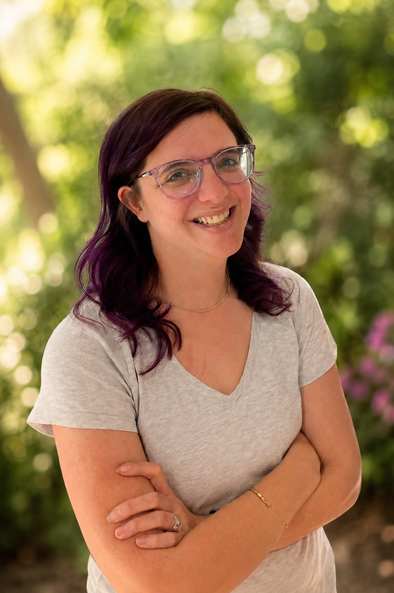
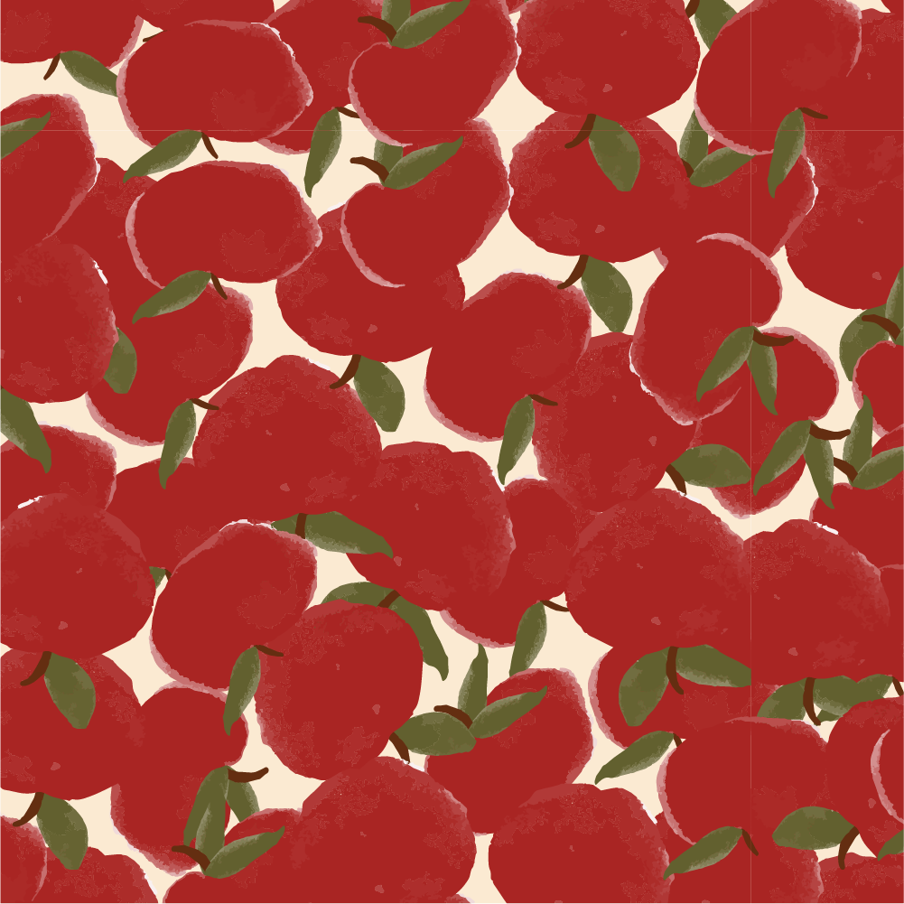
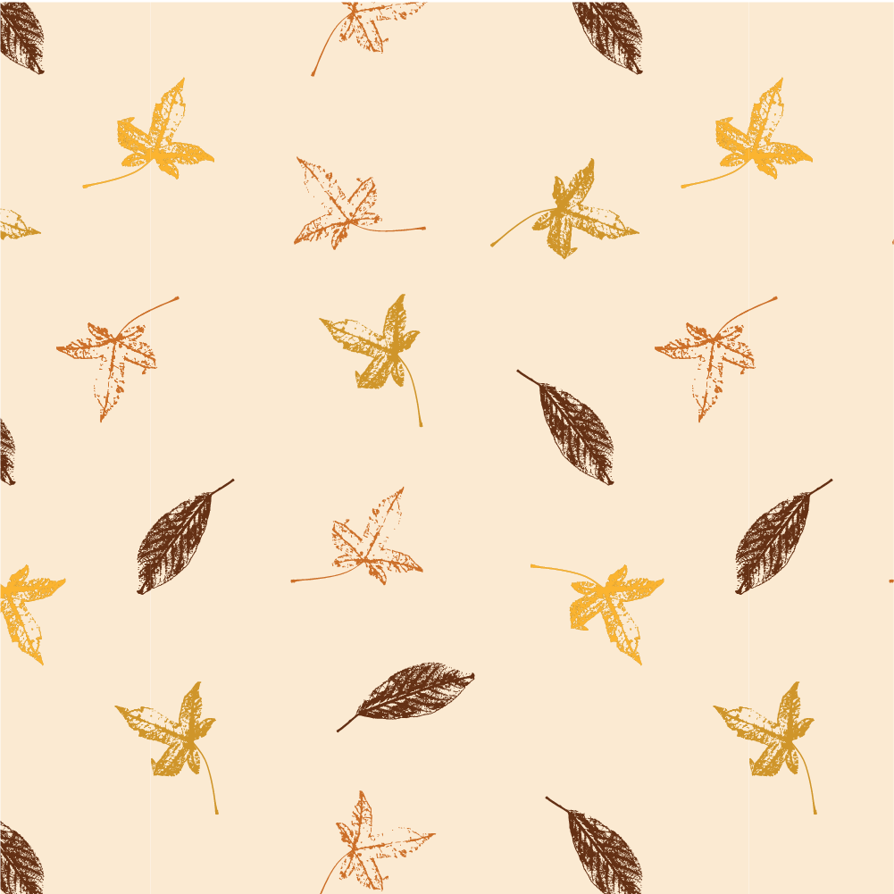
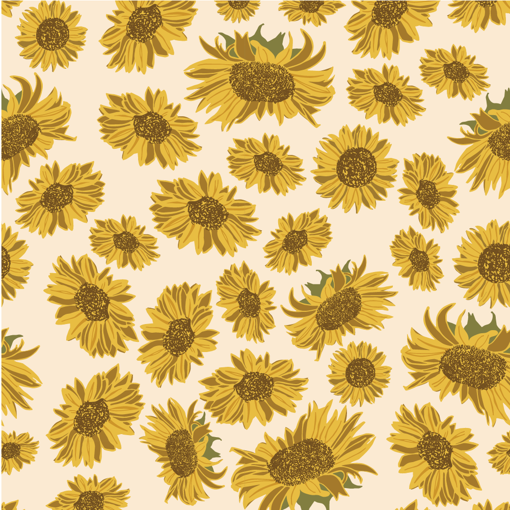
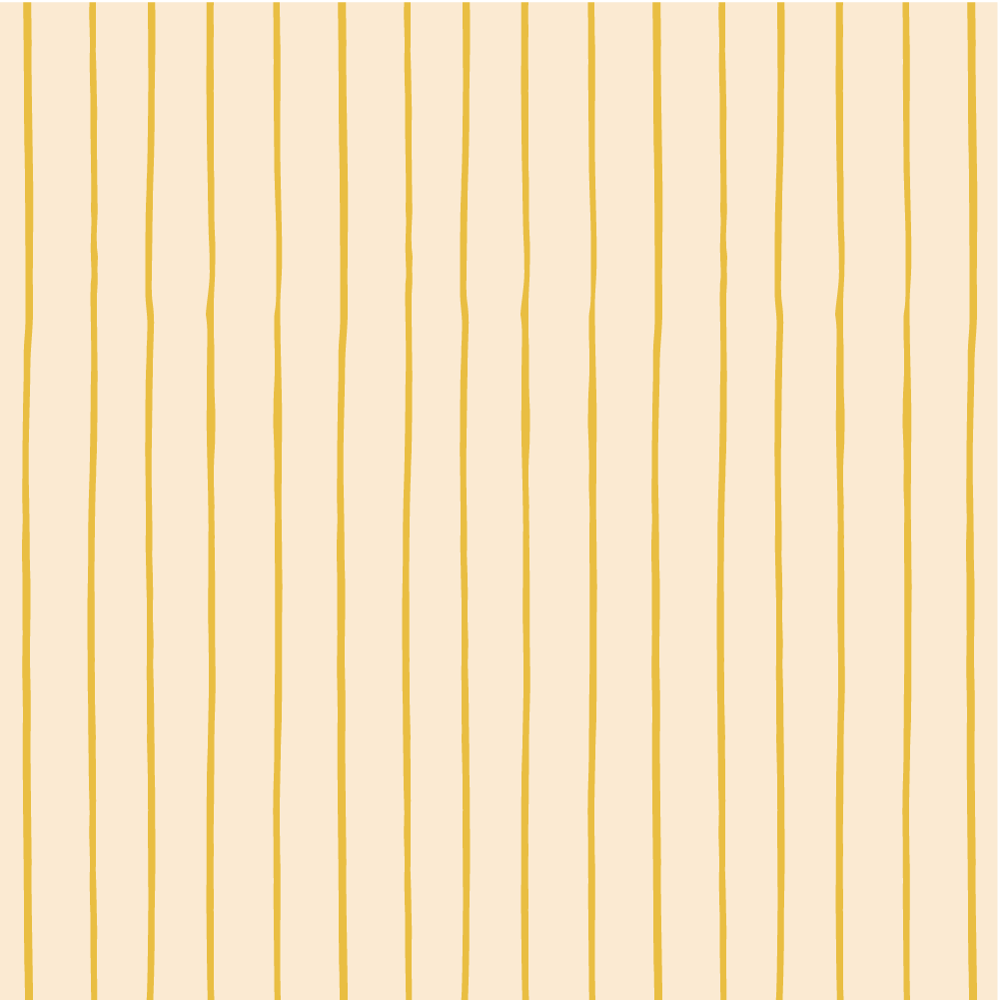
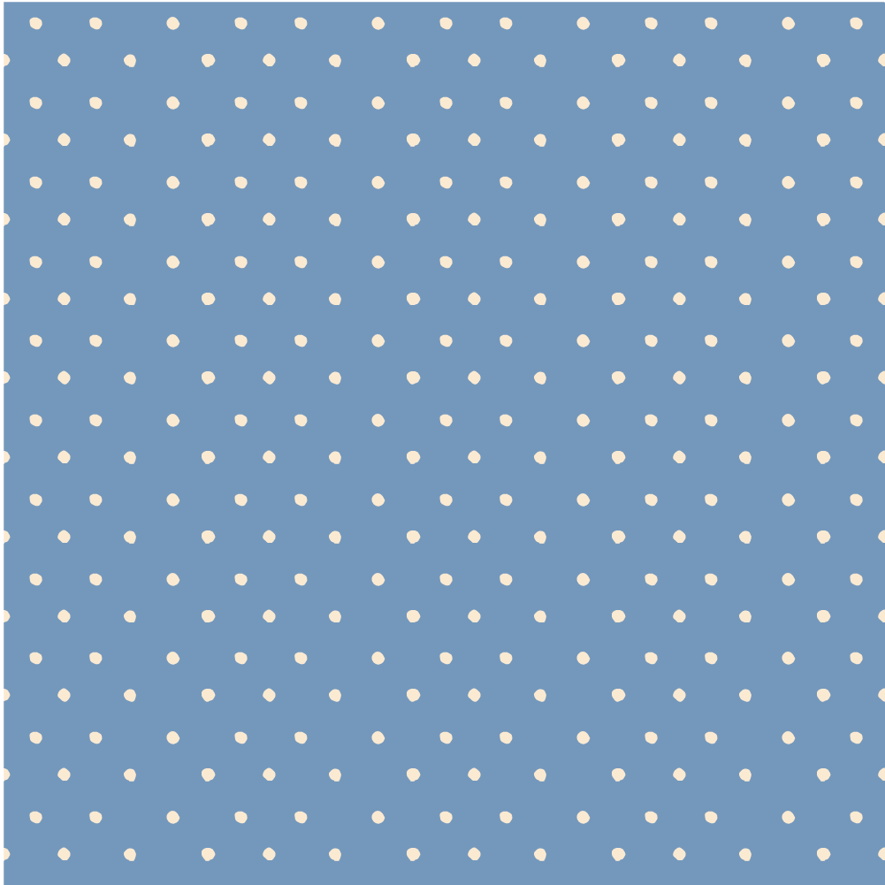
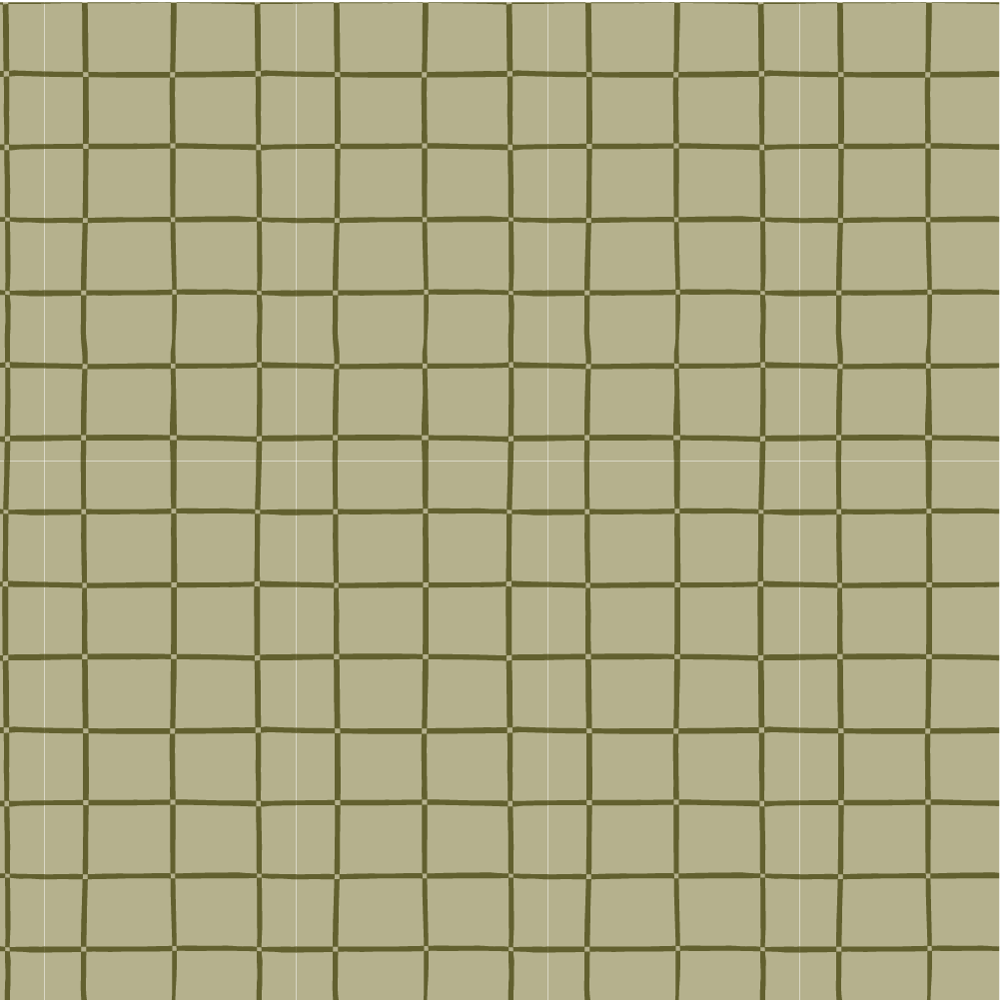

Hand-drawn surface pattern collections inspired by nature, collected stories, and the quiet wonder found in everyday adventures.

Hi, I'm Kate, the illustrator and surface pattern designer behind K Pearce Studio.
Originally from a small town in New Hampshire and now raising my family on Australia's east coast, I create playful, hand-drawn patterns inspired by nature, collected stories, and the quiet wonder found in everyday adventures.
Every design begins as a pencil sketch or a splash of watercolour before being carefully brought to life digitally. My hope is that my work becomes part of people's stories, finding its way into well-loved quilts, handwritten notes, thoughtfully wrapped gifts and the everyday adventures that become our favourite memories.

Apple Harvest
Autumn Drift
Golden Blossoms
Sunlit Rows
Morning Mist
Orchard GridMy work is available for licensing across homewares, fabric, stationery, gift and more. I create hand-drawn surface pattern collections including hero prints, coordinates and supporting patterns, with each collection built around a story, a place, or a moment worth remembering.
For licensing enquiries and collaborations, please get in touch at hello@kpearce.studio.